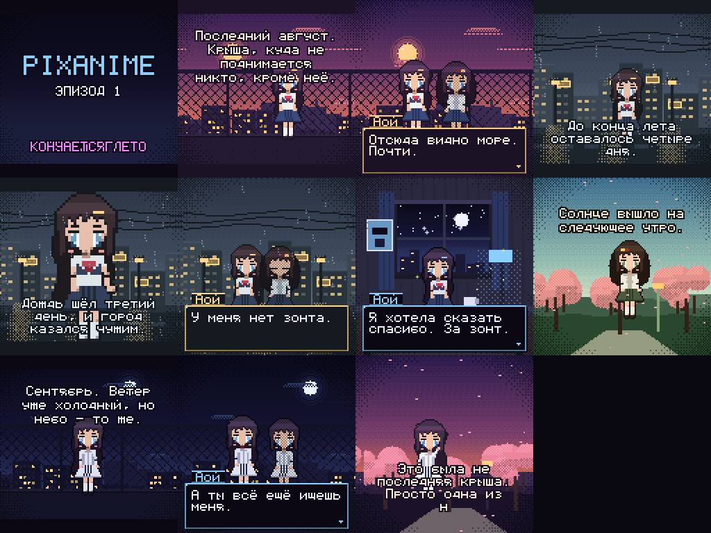

Три эпизода ниже нарисованы кодом: спрайты, фоны, анимация, диалоги, звук.
Ниже — клип, который сгенерировала нейросеть (flow matching, 1.5 млн параметров,
обучена 20 минут на CPU на кадрах этого же движка).
ЭПИЗОД 1 — Город, где кончается лето
крыша на закате · 63 с
ЭПИЗОД 2 — Дождь идёт третий день
улица под дождём · 44 с
ЭПИЗОД 3 — Три года спустя
ночная крыша · 36 с
КАДРЫ
контактный лист из трёх эпизодов

Разрешение каждого кадра — 128×128, апскейл целым множителем ×2 → 256×256:
иначе пиксель-арт «мылится». Крупный план — тот же приём: спрайт рисуется ×2.